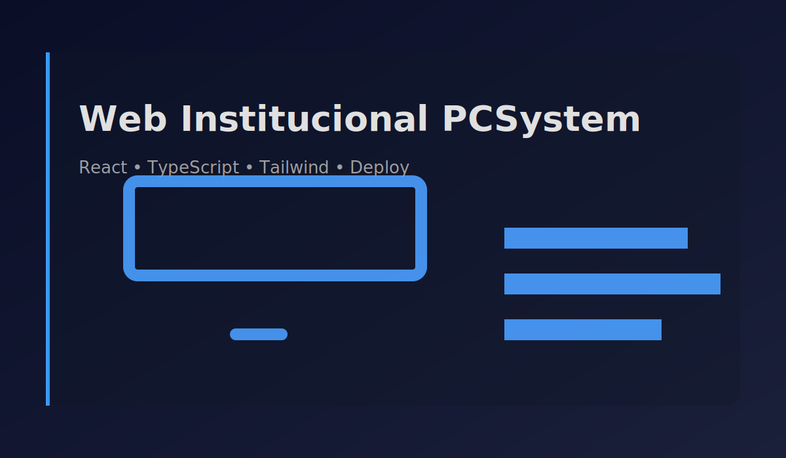

Resumen
Web institucional para PCSystem (Hualpén, Chile), desarrollada con enfoque en accesibilidad y diseño responsivo. Presenta servicios del local como ciber, soporte informático y mantenimiento.
Stack
React
TypeScript
Tailwind CSS
Supabase
PostgreSQL
Rol
Desarrollo del sitio con foco en UI clara, navegación simple y buenas prácticas de accesibilidad.
Highlights técnicos
- Diseño responsivo y jerarquía de contenido enfocada en claridad (servicios/CTA)
- Accesibilidad: estructura semántica, foco visible y navegación consistente
- Optimización básica: carga diferida de assets y experiencia fluida
- Persistencia e integración con Supabase (PostgreSQL) para datos del sitio